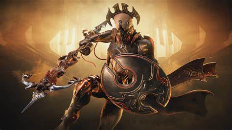

A Warframe egy ingyenesen játszható, online többjátékos akciójáték, amelyet a Digital Extremes fejlesztett és adott ki. A játék először 2013. március 25-én jelent meg Microsoft Windows platformon, majd később PlayStation 4, Xbox One, PlayStation 5, Xbox Series X/S és Nintendo Switch konzolokra is kiadták. A Warframe egy harmadik személyű lövöldözős és közelharci elemeket kombináló játék, amely a futurisztikus sci-fi világban játszódik, ahol a játékosok a Tenno néven ismert ősi harcosokat irányítják.
A Warframe világát egy poszt-apokaliptikus sci-fi univerzum alkotja, amely számos frakciót és civilizációt foglal magában. A játék főszereplői a Tenno, akik ősi harcosok és mesterei a Warframe nevű biomechanikus páncéloknak. A játékosok célja, hogy visszaállítsák a rendet és egyensúlyt az univerzumban, harcolva különféle ellenséges frakciók ellen, mint például:
A Warframe játékmenete dinamikus és gyors tempójú, kombinálva a lövöldözős és közelharci elemeket. A játékosok különböző küldetéseket és kihívásokat teljesítenek, amelyek során tapasztalati pontokat, erőforrásokat és különféle tárgyakat gyűjtenek. A játék legfontosabb elemei a következők:
A játékosok a Warframe-ek és fegyverek fejlesztése mellett a saját karakterüket is folyamatosan fejleszthetik. A haladás számos módon érhető el:
A Warframe nagy hangsúlyt fektet a közösségi játékra, lehetővé téve a játékosok számára, hogy együttműködjenek és csapatokat alkossanak a különböző küldetések során. A játék támogatja a klánokat és szövetségeket, ahol a játékosok közösen építhetnek és fejleszthetnek saját dojoikat (klánbázisok), valamint részt vehetnek különféle közösségi eseményeken és kihívásokon.
A Warframe több játékmódot kínál, beleértve az egyjátékos és többjátékos módokat is. Az alapvető játékmenet mellett számos kiegészítő tartalom és esemény is elérhető:
A Warframe ingyenesen játszható, de rendelkezik mikrotranzakciós rendszerrel, ahol a játékosok valódi pénzért vásárolhatnak Platinumot, amelyet a játékban különféle tárgyak, Warframe-ek, fegyverek és kozmetikai elemek vásárlására használhatnak. Bár a játék sok tartalma elérhető anélkül, hogy fizetni kellene, a Platinum vásárlása lehetővé teszi a gyorsabb előrehaladást és a testreszabási lehetőségek szélesebb körét.
A Warframe a Digital Extremes saját motorjára épül, amely kiváló grafikai megjelenítést és optimalizációt biztosít. A játék rendszeres frissítéseket kap, amelyek új tartalmakat, fejlesztéseket és hibajavításokat tartalmaznak. A fejlesztők aktívan figyelik a közösségi visszajelzéseket, hogy folyamatosan javítsák és bővítsék a játékot.
A Warframe egy dinamikus és izgalmas akciójáték, amely gazdag történettel és változatos játékmenettel rendelkezik. A különféle Warframe-ek, fegyverek és képességek széles választéka lehetővé teszi a játékosok számára, hogy saját játékstílusukat alakítsák ki. Az aktív közösség, a rendszeres frissítések és az ingyenes hozzáférés mind hozzájárulnak ahhoz, hogy a Warframe az egyik legnépszerűbb online akciójáték legyen. A játék folyamatosan fejlődik és bővül, újabb és újabb tartalmakkal és élményekkel gazdagítva a játékosok világát.
